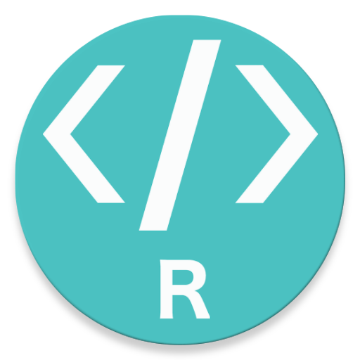

Prof. Dr. Sadraque E. F. Lucena sadraquelucena@academico.ufs.br
Distribuição Hipergeométrica
Esta distribuição se aplica em casos similares à distribuição binomial, mas há uma diferença básica:
A distribuição Binomial precisa que a amostragem seja feita com reposição (para que haja independência e as probabilidades se mantenham as mesmas em cada realização do experimento).
A distribuição Hipergeométrica é baseada na amostragem sem reposição.
Definição 14.1: Distribuição Hipergeométrica
Uma variável aleatória hipergeométrica \(X\) representa o número de sucessos em uma amostra aleatória sem reposição de tamanho \(n\).
Essa amostra é extraída de uma população de \(N\) itens, dos quais \(k\) são classificados como sucessos e \(N-k\) como fracassos.
A probabilidade de ocorrerem \(x\) sucessos nessa amostragem sem reposição é dada por \[
P(X=x) = \frac{\binom{k}{x}\binom{N-k}{n-x}}{\binom{N}{n}}, x=0,1,2,\ldots,n.
\]
Notação:\(X\sim \text{Hipergeométrica}(N,n,k)\)
Teorema 14.1
Se \(X\sim \text{Hipergeométrica}(N,n,k)\), a média e a variância são, respectivamente, \[
E(X) = \frac{nk}{N}
\] e \[
Var(X) = n\frac{k}{N} \frac{(N-k)}{N} \frac{N-n}{N-1}.
\]
Distribuição Hipergeométrica
Como identificar a distribuição hipergeométrica:
O tamanho da população é conhecido, \(N\).
A população é dividida em dois grupos distintos:
\(k\) itens de interesse (sucessos)
\(N-k\) itens não desejados (fracassos).
A amostra de tamanho \(n\) é retirada sem reposição.
A variável de interesse \(X\) é o número de sucessos na amostra.
Exemplo 14.1
Lotes de 40 componentes cada são chamados de inaceitáveis se contiverem três ou mais itens defeituosos. O procedimento para a amostragem do lote é selecionar cinco componentes aleatoriamente e rejeitar o lote se um item defeituoso for encontrado. Qual é a probabilidade de que exatamente um item defeituoso seja encontrado na amostra se há três defeituosos no lote inteiro?
Exemplo 14.2
Em cem apólices de uma empresa de seguros, 12 apresentam irregularidades. Qual é a probabilidade de que em uma amostra de dez dessas apólices,
três apresentem irregularidade?
pelo menos uma apresente irregularidade?
Determine \(E(X)\) e \(Var(X)\).
Distribuição Hipergeométrica no R

Para calcular no R:
\(P(X=x)\) use o comando dhyper(x, n_sucessos, n_fracassos, n_amostra).
\(P(X\leq x)\) use o comando phyper(x, n_sucessos, n_fracassos, n_amostra).
Se o tamanho da população \(N\) é muito grande em relação ao tamanho da amostra \(n\), a probabilidade de sucesso muda muito pouco a cada retirada.
Nesses casos, a Distribuição Binomial é uma excelente aproximação.
Regra prática. A aproximação é considerada boa quando a amostra é menor que 5% da população:\[\frac{n}{N} \le 0,\!05\]
Aproximação da Hipergeométrica pela Binomial
Se \(X \sim \text{Hipergeométrica}(N, n, k)\), podemos dizer que \(X\) se comporta aproximadamente como uma \(X \sim \text{Binomial}(n, p)\), onde:\[p = \frac{k}{N}\]
Exemplo
Se temos 10.000 peças (\(N\)) com 500 defeituosas (\(k\)) e sorteamos 10 (\(n\)), a probabilidade de sucesso \(p\) é \(5\%\). Como \(\frac{10}{10.000} = 0,\!001 \le 0,\!05\), o erro entre usar a fórmula complexa da Hipergeométrica ou a simples da Binomial é praticamente zero.